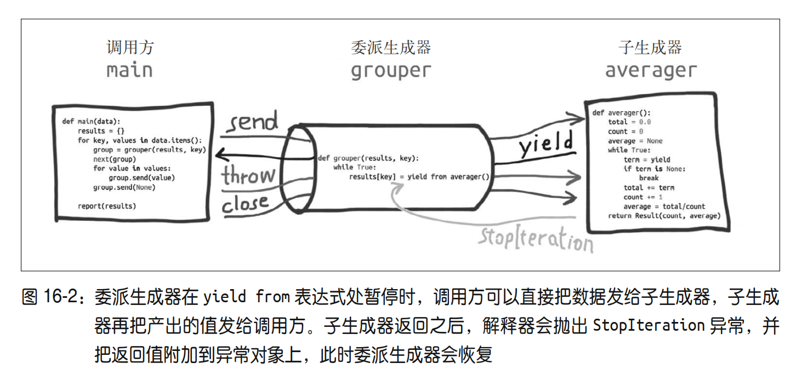

Ref: 《Fluent Python》 第16章 协程
协程是指一个过程，这个过程与调用方协作，产出由调用方提供的值。
def simple_coroutine(a): # 协程用生成器函数定义，里面有yield |
<generator object simple_coroutine at 0x1069e5230>
next(my_coro) # 预激活协程，让协程向前执行到第一个yield |
-> Started: a = 14
my_coro.send(42) # 控制权流动到协程末尾，抛出StopIteration |
-> Received: 42
---------------------------------------------------------------------------
StopIteration Traceback (most recent call last)
Cell In[3], line 1
----> 1 my_coro.send(42) # 控制权流动到协程末尾，抛出StopIteration
可以通过inspect.getgeneratorstate()确定协程的状态：
- GEN_CREATED
- GEN_RUNNING
- GEN_SUSPENDED
- GEN_CLOSED
from inspect import getgeneratorstate |
'GEN_CLOSED'
使用协程计算移动平均值
def averager(): |
avg = averager() |
10.0
avg.send(11) |
10.5
下面解决两个问题：
- 用装饰器解决每次都要先预激活协程的问题（略）
- 如何结束协程的问题
第一个问题的代码忽略，预激协程装饰器
终止协程和异常处理
客户代码可以在生成器对象上调用两个方法，显式地把异常发给协程。这两个方法是 throw 和 close。
generator.throw(exc_type[, exc_value[, traceback]])
致使生成器在暂停的 yield 表达式处抛出指定的异常。如果生成器处理了抛出的异常，代码会向前执行到下一个 yield 表达式，而产出的值会成为调用 generator.throw 方法得到的返回值。如果生成器没有处理抛出的异常，异常会向上冒泡，传到调用方的上下文中。
generator.close()
致使生成器在暂停的 yield 表达式处抛出 GeneratorExit 异常。如果生成器没有处理这个异常，或者抛出了 StopIteration 异常（通常是指运行到结尾），调用方不会报错。如果收到 GeneratorExit 异常，生成器一定不能产出值，否则解释器会抛出RuntimeError 异常。生成器抛出的其他异常会向上冒泡，传给调用方。
class DemoException(Exception): |
started
received: 11
received: 11
DemoException Handled, Continuing...
使用yield from
首先yield from 可以简化for循环中的yield表达式，
yield from x 表达式对 x 对象所做的第一件事是，调用 iter(x)，从中获取迭代器。
def gen(): |
['A', 'B', 0, 1, 2]
def gen(): |
['A', 'B', 0, 1, 2]
但yield from 的主要功能是打开双向通道，把最外层的调用方与最内层的子生成器连接起来，这样二者可以直接发送和产出值，还可以直接传入异常，而不用在位于中间的协程中添加大量处理异常的样板代码。有了这个结构，协程可以通过以前不可能的方式委托职责。用脚本例子说明：
''' |
9 boys averaging 40.42kg
9 boys averaging 1.39m
10 girls averaging 42.04kg
10 girls averaging 1.43m
解释一下上面代码发生了什么：

- 外层for循环每次迭代会新建一个grouper实例，赋值给group变量； group是委派生成器。
- 调用 next(group)，预激委派生成器 grouper，此时进入 while True 循环，调用子生成器 averager 后，在 yield from 表达式处暂停。
- 内层 for 循环调用 group.send(value)，直接把值传给子生成器 averager。同时，当前的 grouper 实例（group）在 yield from 表达式处暂停。
- 内层循环结束后， group 实例依旧在 yield from 表达式处暂停，因此， grouper 函数定义体中为 results[key] 赋值的语句还没有执行。
- 如果外层 for 循环的末尾没有 group.send(None)，那么 averager 子生成器永远不会终止，委派生成器 group 永远不会再次激活，因此永远不会为 results[key] 赋值。
- 外层 for 循环重新迭代时会新建一个 grouper 实例，然后绑定到 group 变量上。前一个grouper 实例（以及它创建的尚未终止的 averager 子生成器实例）被垃圾回收程序回收。
yield from 意义
- 子生成器产出的值都直接传给委派生成器的调用方（即客户端代码）。
- 使用 send() 方法发给委派生成器的值都直接传给子生成器。如果发送的值是 None，那么会调用子生成器的 next() 方法。如果发送的值不是 None，那么会调用子生成器的 send() 方法。如果调用的方法抛出 StopIteration 异常，那么委派生成器恢复运行。任何其他异常都会向上冒泡，传给委派生成器。
- 生成器退出时，生成器（或子生成器）中的 return expr 表达式会触发 StopIteration(expr)异常抛出。
- yield from 表达式的值是子生成器终止时传给 StopIteration 异常的第一个参数
对于RESULT = yield from EXPR的伪代码：(这块看看就行了)
_i = iter(EXPR) # EXPR是任何可迭代的对象 |